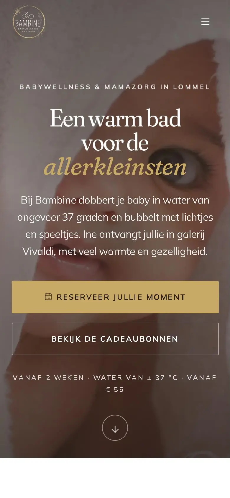
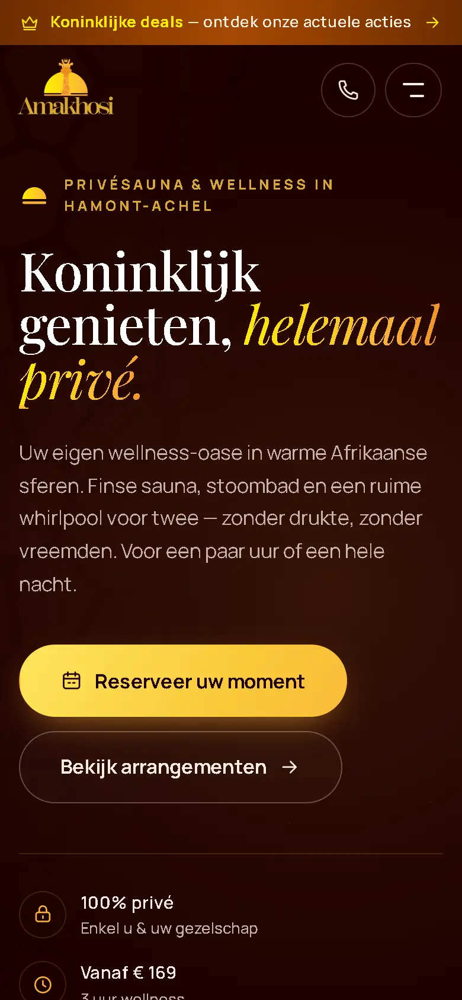

Website laten maken in Lommel,
waar ouders online een warm bad boeken.
Een website laten maken in Lommel? In galerij Vivaldi zit Bambine, de babywellness en mamazorg van Ine. Wij bouwden haar nieuwe site, met online boeken, extra's bij een sessie en een cadeaubon die je meteen digitaal koopt. Iets verder, in Hamont-Achel, deden we iets gelijkaardigs voor een privésauna.
Bambine in Lommel, Amakhosi in Hamont-Achel
- Bambine Lommelbabywellness en mamazorg, galerij Vivaldi
- Amakhosi Sauna Hamont-Achelprivésauna en wellness
Vereenvoudigde kaart, ingezoomd op het noorden van Limburg.
Website laten maken in Lommel:
zo boekt Bambine online.
Bambine is babywellness en mamazorg in galerij Vivaldi, aan het Michiel Jansplein. Baby's gaan er in een warm bad of krijgen een massage, mama's komen voor een massage of een verwenmoment, en kinderen voor een verwensessie. Ine doet het allemaal zelf, één op één. Ze werkte zeventien jaar in een kinderopvang in Lommel en is hoger redder.
We schreven niets bij wat Ine zelf niet zegt. Haar bestaande site was de bron: haar diensten, haar prijzen, haar woorden. Wat nieuw is, zit in het ontwerp en in wat de site kan. Goud, lichtbruin en wit, met boogvormige beelden en de tarieven als een menukaart.
Ouders kiezen online zelf een moment. Bij een sessie nemen ze er een extra bij, zoals een wasmomentje, of ze boeken een verwensessie meteen voor een tweede kind. Een cadeaubon koop je digitaal. Na het boeken lopen er vijf automatische mails, van de bevestiging met wat je meebrengt tot een bedankje na het bezoek.
De eerste feedback van Ine kwam via WhatsApp binnen en zat dezelfde dag in de site. Haar uren en haar beschikbaarheid past ze zelf aan in ons platform. En haar webshop bleef gewoon bestaan: die staat in het menu van de nieuwe site.
Bekijk bambine.be (opent in een nieuw venster)Bambine in ons portfolio

Amakhosi Sauna:
reserveren en meteen betalen.
Tegen de grens met Nederland ligt Amakhosi Sauna, de luxe privésauna en wellness van Patrick en Connie. Gasten hebben er alles voor zich alleen: een Finse sauna, een stoombad, een bubbelbad, een lounge met sfeerhaard en, voor wie blijft slapen, een aparte slaapkamer.
Op de nieuwe site kies je een moment overdag of een overnachting, en je betaalt meteen online. Daarna komen de bevestiging, de herinnering en de opvolging vanzelf. Na een overnachting houdt het systeem de ochtend erna vrij, zodat niemand dan een dagmoment kan boeken.
De naam betekent koningen in het Zulu, en dat zie je aan de site: espresso en goud, koppen met schreef en een lint met alles wat er te beleven valt. Ook de extra's staan erop, van een uitgebreid ontbijt voor twee tot een tapas- of kaasplank. Die bestel je minstens een dag vooraf.
De mails spreken de gasten aan met u, want zo spreekt Amakhosi ook op zijn eigen site.

Lommel ligt aan de andere kant
van de provincie. Dat merk je niet.
Wij zitten in Vechmaal, helemaal in het zuiden van Limburg. Lommel en Hamont-Achel liggen in het noorden, tegen de grens met Nederland. Op de kaart lijkt dat ver, maar voor hoe we werken maakt het niets uit: alles loopt online.
De gratis demo duurt dertig minuten en loopt via Teams. Daarna stuur je je foto's, teksten en prijzen door, en wij bouwen. Feedback geef je zoals Ine het deed: een berichtje via WhatsApp is genoeg.
Wie met sessies werkt, zoals een wellness, een salon of een praktijk, stelt zich meestal dezelfde vragen. Hoe boeken klanten zelf, ook 's avonds? Hoe verkoop ik een cadeaubon zonder dat iemand moet langskomen? En hoe zorg ik dat niemand zijn afspraak vergeet? Bij Bambine en Amakhosi beantwoordt de site die vragen nu zelf.
- Online boeken, met extra's die klanten zelf aanvinken
- Een bevestiging met wat je klant moet meebrengen
- Een herinnering vooraf, en een bedankje achteraf
- Je eigen uren, die je zelf aanpast
Online boeken en betalen
in één maandprijs.
Dat pakket heet Online groeien. Er is geen opstartkost, en je kunt elke maand opzeggen.
Online groeien
€150per maand, excl. btw
Geen opstartkost, maandelijks opzegbaar
- Een nieuwe website in de stijl van jouw zaak
- Een boekingssysteem, met extra's die klanten erbij kiezen
- Online betalen en facturen
- Automatische mails voor en na elke afspraak
- Je Google-bedrijfsprofiel en reviewverzoeken
- Al je berichten op één scherm
Krijg je veel vragen via berichtjes? Een AI-chatbot antwoordt voor €50 per maand extra. Wil je dat iemand je telefoon opneemt terwijl je met een klant bezig bent? Dat doet een AI-receptioniste: eenmalig €750, daarna €150 per maand met 300 belminuten. Alles excl. btw.
Ook in Hasselt en Haspengouw
bouwden we websites.
Op de pagina over Limburg zie je al onze klanten samen op één kaart.
- LimburgVijf klanten, drie streken, één kaart.
- HasseltClinic3D: 650 van 681 afspraken bevestigd.
- HeersOns eigen dorp, met 't Kleinhof en Mett-U als buren.
- Sint-TruidenMett-U: een contactformulier dat zelf opvolgt.
- Tongeren't Kleinhof: een boerderij die haar eigen verhaal vertelt.
- GenkGeen klant in Genk, wel 39 telefoontjes tegenover 681 afspraken.
Vragen uit Lommel
en het noorden van Limburg.
Een zaak in het noorden van Limburg?
Plan een gratis demo van 30 minuten via Teams. We tonen hoe klanten bij jou online boeken, met de extra's die bij je zaak passen.